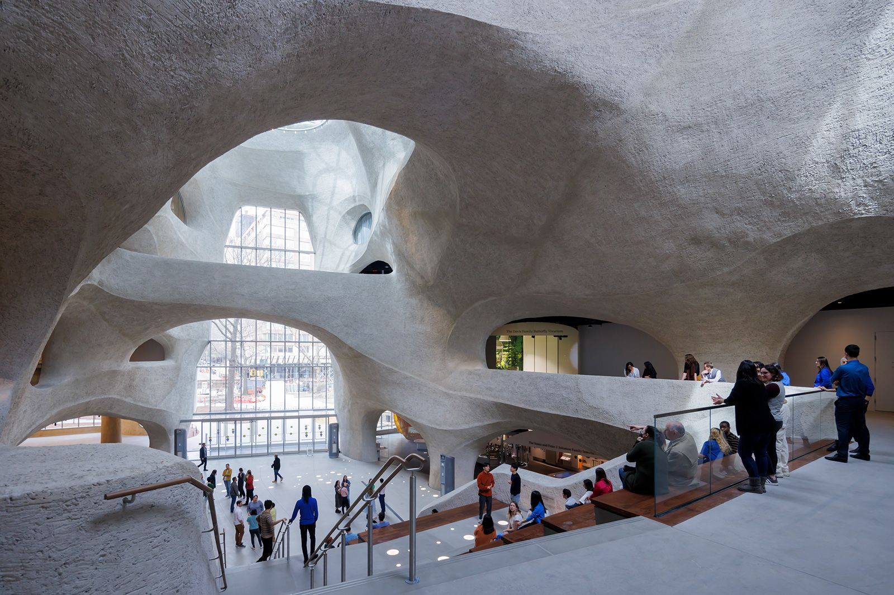

The American Museum of Natural History, located on the Upper West Side of Manhattan, is one of the most renowned museums in the world. Founded in 1869, it was established with the mission to “discover, interpret, and disseminate information about human cultures, the natural world, and the universe.” The museum occupies a vast complex facing Central Park, and it houses over 34 million specimens, ranging from dinosaur fossils and meteorites to cultural artifacts and rare minerals. Its iconic dioramas, immersive planetarium, and grand exhibitions make it a place where science, history, and imagination collide.
The museum’s history reflects both the growth of New York City and America’s fascination with discovery. It began in the post–Civil War era, when scientific curiosity and exploration were rapidly expanding. With early support from figures like Theodore Roosevelt Sr. (father of the future president) and financier J.P. Morgan, the institution quickly became a center for scientific research and education. Its scientists led groundbreaking expeditions throughout the late 19th and early 20th centuries, from Arctic explorations to African safaris, contributing to major discoveries in paleontology, anthropology, and zoology. The museum also played a major role in developing natural history as a public discipline—bringing the wonders of the natural world to the city’s growing population.
Throughout its history, the museum has played a key role in scientific discovery. Its expeditions during the early 1900s were legendary—explorers and scientists brought back fossils, animal specimens, and cultural artifacts from every corner of the world. Roy Chapman Andrews’ Central Asian expeditions, for instance, led to the first discovery of dinosaur eggs, transforming paleontology. Similarly, the museum’s anthropological collections helped shape the study of human cultures and history, with figures like Franz Boas pioneering new approaches to understanding cultural diversity. The Hayden Planetarium, added in 1935 and later redesigned as part of the Rose Center for Earth and Space, expanded the museum’s reach beyond Earth, introducing generations to astronomy and cosmology.
The American Museum of Natural History holds an especially profound place in New York City’s cultural and civic identity. More than just a museum, it represents the city’s dedication to education, diversity, and the pursuit of knowledge. For generations of New Yorkers, visiting the museum has been a kind of rite of passage—school field trips under the giant blue whale, afternoons spent marveling at dinosaur fossils, or family days wandering through the Hall of African Mammals. It’s a shared cultural memory that connects people across backgrounds and decades. The museum’s free or low-cost public programs also make it a deeply democratic space—one that reflects New York’s belief that learning should be accessible to everyone, not just academics or the wealthy.
Its location on the edge of Central Park further reinforces its importance to the city’s urban landscape. Together, the park and the museum form a kind of cultural ecosystem: one celebrates nature’s living beauty, the other preserves its scientific story. The museum has also been instrumental in positioning New York as a global leader in research and education. Its scientists, who work behind the scenes in laboratories and archives, contribute to international studies on biodiversity, climate change, and human evolution—all from the heart of Manhattan. This dual identity as both a public museum and a world-class research institution sets it apart from other cultural landmarks in the city.

Culturally, the museum mirrors New York’s own character—diverse, curious, and always evolving. Its exhibits span every corner of the globe and every era of time, just as the city itself gathers people from everywhere. From film appearances like Night at the Museum to art collaborations and citywide science festivals, the institution continues to influence how New Yorkers engage with science, nature, and storytelling. In essence, the American Museum of Natural History is more than a collection of artifacts—it’s a reflection of New York’s soul: a place that celebrates discovery, honors the past, and inspires future generations to keep asking questions.
\